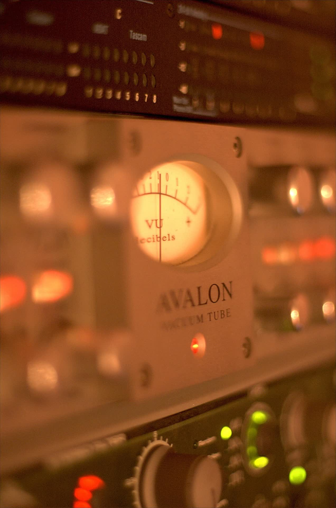
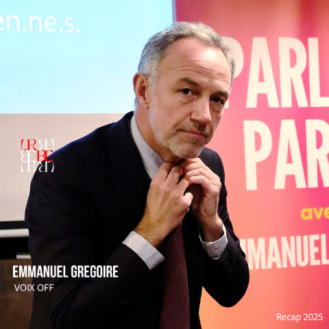
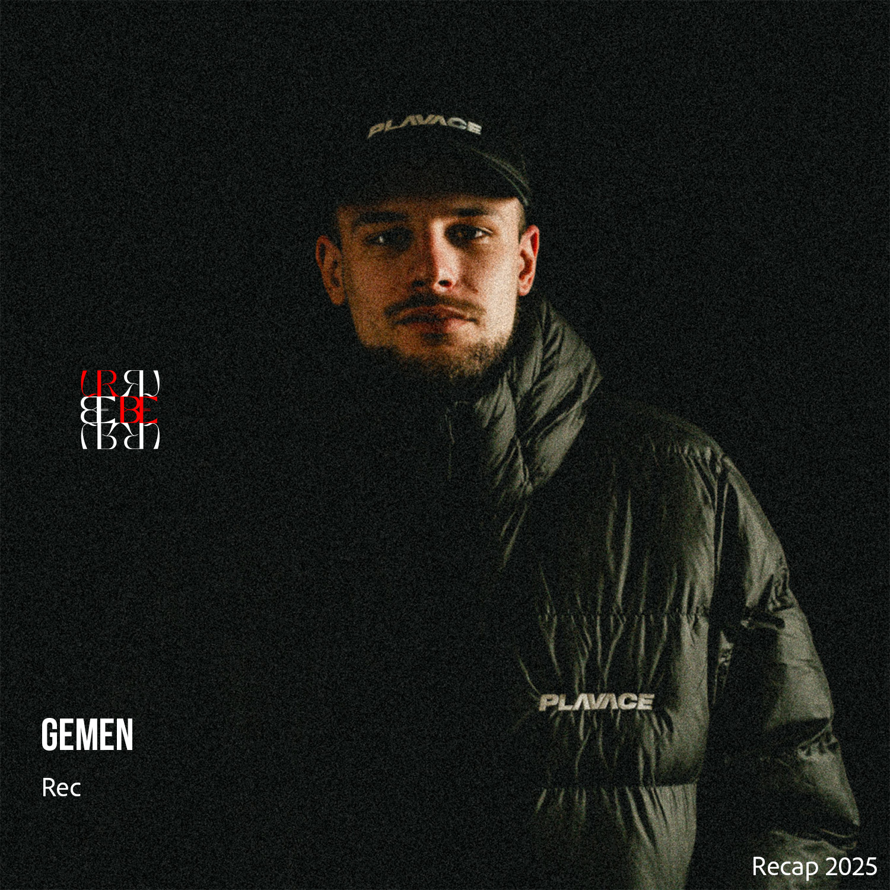
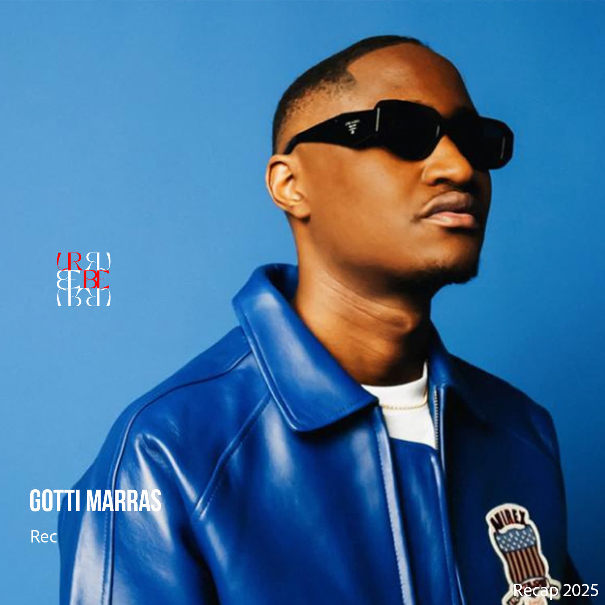

Nos actualités
Guides et conseils sur le mixage et le mastering audio en ligne, notre studio d'enregistrement à Paris 10ᵉ et le mixage rap.

Pourquoi votre son est plus faible que le reste de la playlist
Normalisation, LUFS intégrés, true peak : pourquoi votre master sonne petit à côté des autres, et comment y remédier.
Lire l'article →Presser un vinyle quand on est indépendant
Marge, durée, master gravable : ce qu'un pressage vinyle exige avant de commander 300 exemplaires.
Lire l'article →Spotify fait le ménage : ce que ça change pour vous
Badge AI Persona, crédits IA, profils vérifiés, purge des titres spam : décryptage pour un artiste indépendant.
Lire l'article →Mixage IA en 2026 : ce qui marche vraiment
Ce que les outils de mixage automatique savent faire, ce qu'ils ratent encore, et où l'oreille humaine reste décisive.
Lire l'article →
Mixage en ligne pour l'Afrique
Un studio parisien accessible partout : rap, afrobeat, amapiano — par genre et par pays.
Lire l'article →
Quel est ton profil de mix ?
5 questions pour découvrir ce que ton morceau a vraiment besoin d'entendre.
Faire le test →
Ton son est-il prêt à sortir ?
6 questions, un verdict clair : ce qu'il te reste à faire avant le streaming.
Faire le diagnostic →
Mixage à distance : ne prenez pas de retard cet été
Envoyez vos pistes où que vous soyez et arrivez à la rentrée avec un catalogue prêt.
Lire l'article →
Mixage afro à distance
Percus qui respirent, basse qui roule : le groove intact, où que vous soyez.
Lire l'article →
Mixage trap à distance
808 qui tapent, hi-hats précis : la même pression, où que vous soyez.
Lire l'article →Mixage r&b à distance
Voix mise en valeur, harmonies posées, dynamique préservée — la nuance avant tout.
Lire l'article →
Un ingénieur du son pro, pas un algorithme
Pourquoi un humain formé et crédité fait toujours la différence face à une IA.
Lire l'article →
Fête de la Musique 2026 à Paris
Open air gratuit avec Urbe & Saphir : quand la passion dépasse les obstacles.
Lire l'article →Mixage et mastering audio en ligne
Envoyez vos pistes, recevez votre mix prêt pour le streaming sous 7 jours.
Lire l'article →Mixage rap à Paris
Voix en avant, 808 maîtrisées : notre méthode pour mixer les musiques urbaines.
Lire l'article →Studio d'enregistrement à Paris 10ᵉ
Cabine traitée, régie pro, ouvert 24h/24 au cœur du 10ᵉ arrondissement.
Lire l'article →